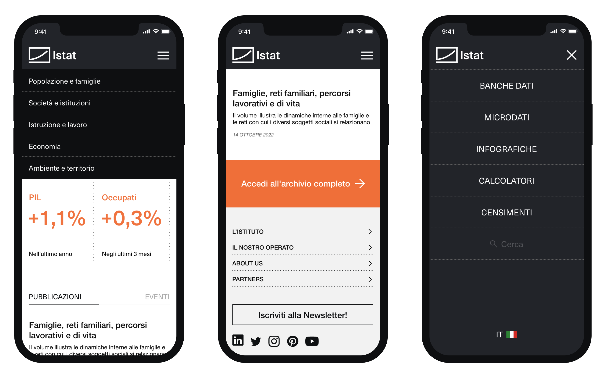
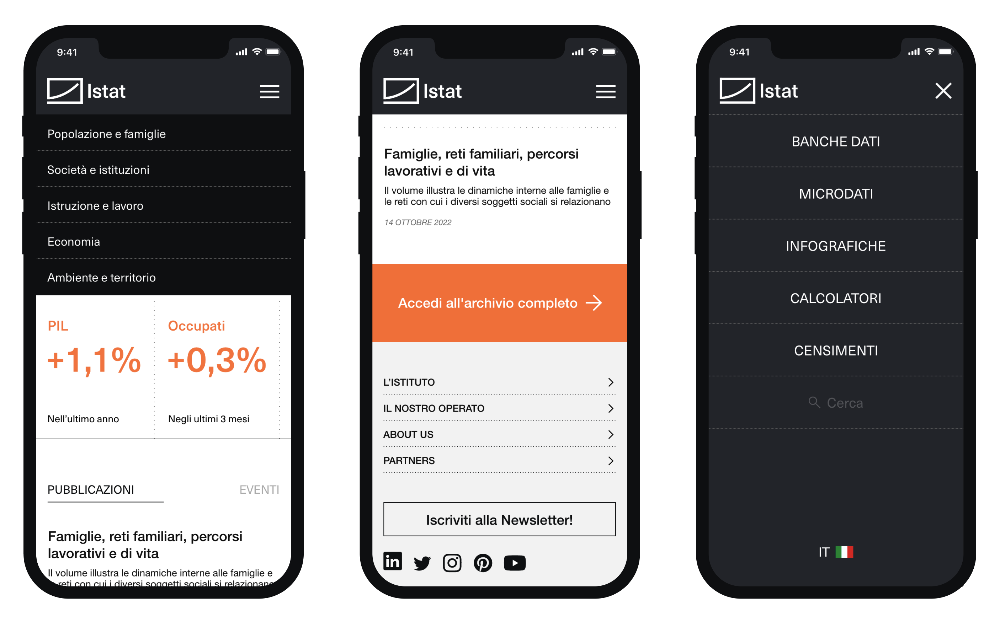

Branding, Layout Design, UI Design, Motion Design
Istat is the national statistical office of Italy, is responsible for collecting, producing, and disseminating official statistical information on various aspects of the Italian society and economy.
I have worked on a new visual identity with the aim of expressing the ideals of accuracy, reliability, and accessibility of information that the institution strives for in its statistical analysis work.
The project includes a new logo for the institution, declined in multiple configurations, a redesign of the website for both desktop and mobile devices, and a visual communication system for social channels.
The design strive for a communication system consistent with the values of an national statistical institution while being at the same time capable of expressing complex data and analysis in a simple and immediate way especially on social channels.
 
